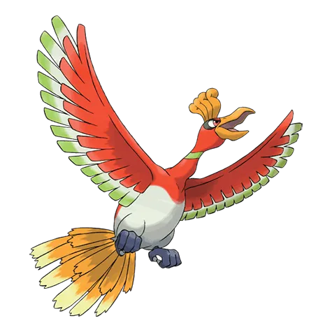
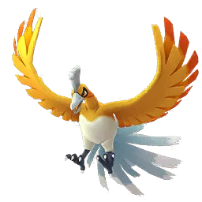

🧭 Quick Navigation
📖 Introduction
Ho-Oh is one of the most iconic Legendary Pokémon in Pokémon GO. Originally discovered in the Johto region, this majestic Fire and Flying-type Pokémon is known for its incredible power and vibrant rainbow wings.
In raid battles, Ho-Oh can be a challenging opponent due to its high durability and powerful Fire-type moves such as Sacred Fire and Fire Blast. However, trainers who use strong Rock-type counters can defeat Ho-Oh efficiently.
Ho-Oh is popular for:
- Raids (as a Fire-type attacker)
- Master League PvP
- Legendary and shiny collection
This Ho-Oh raid guide covers everything trainers need to know, including the best counters, weaknesses, catch CP ranges, weather boosts, shiny availability, and effective raid strategies.
Related guides: Kyurem | Lugia
💡 Expert Insight
Ho-Oh is a Fire and Flying-type raid boss with strong attack power and good bulk. Its double weakness to Rock-type moves is the most effective strategy.
Rock-type attackers can deal massive damage quickly, making this raid much easier for prepared teams.
📊 Ho-Oh Stats
| Type | Fire / Flying |
| Max CP | 4434 |
| Weather Boost | Windy, Sunny |
| Shiny | Yes |
| Base Attack | 239 |
| Base Defence | 175 |
| Base Stamina | 207 |
Ho-Oh has very high attack, which makes it dangerous for unprepared trainers.
🎯 Catch CP & 100% IV
After defeating Ho-Oh, you encounter a normal Ho-Oh.
CP Range:
- No Weather Boost: 2,119-2,207 CP
- Weather Boost: 2,649-2,759 CP
100% IV:
- 2207 (Normal)
- 2759 (Weather Boosted)
Use:
- Golden Razz Berry
- Curveball Excellent Throws
Keep in mind that weather-boosted Ho-Oh is significantly harder to defeat, so always prepare strong Rock, Water or Electric-type counters.
⚠️ Ho-Oh Weaknesses
Ho-Oh is weak to the following types:
| Category | Details |
|---|---|
| ❌ Weak To: |
 Rock • Rock •
 Water • Water •
 Electric Electric
|
| ✅ Resistant To: |
 Fighting • Fighting •
 Bug • Bug •
 Steel • Steel •
 Fire • Fire •
 Ground • Ground •
 Fairy • Fairy •
 Grass Grass
|
Notes: Ho-Oh resists Grass, Bug, Fighting, Steel, and Fire moves. Using those types is inefficient.
🗡️ Best Ho-Oh Counters
To defeat Ho-Oh quickly, prioritize Rock-type attackers. Water and Electric Pokémon are effective, but they do not match the raw power of Rock due to the double weakness.
🪨 Rock-Type Counters (Top Priority)
Rock-type Pokémon provide the highest DPS against Ho-Oh. Fast moves like Smack Down or Rock Throw combined with charged moves such as Stone Edge or Rock Slide are ideal for maximizing damage output.
Using a Mega Rock-type Pokémon significantly boosts Rock damage for the entire raid group. Coordinating Mega boosts can dramatically reduce raid duration.
- Rampardos: (Smack Down / Rock Slide)
- Rhyperior: (Smack Down / Rock Wrecker)
Massive attack stat makes it a top damage dealer.
Excellent Rock Counters
💧 Water-Type Counters
Water Pokémon deal super-effective damage to Ho-Oh’s Fire typing. They are reliable alternatives if your Rock team is limited. Rainy weather further boosts Water-type attacks, making them more competitive.
- Kyogre: (Waterfall / Origin Pulse)
- Blastoise: (Hydro Cannon)
Excellent Water Counters
Exploits Ho-Oh’s Fire typing.
⚡Electric-Type Counters
Electric Pokémon exploit Ho-Oh’s Flying typing. They provide stable damage output and solid performance, especially during Rainy weather.
- Ampharos: (Volt Switch)
Strong because Ho-Oh is Flying-type.
Why Rock-Type Counters Are Best
Ho-Oh has a double weakness to Rock-type moves, meaning they deal significantly more damage than other types. Because of this, Rock-type attackers like Rampardos and Rhyperior outperform all other counters in raids.
🏆 Best Regular Counters
Regular Pokémon that amplify the right types give you a powerful edge. Below are top Regular counters with short notes on why they excel.
| Pokémon | 🗡️ Fast Moves | 💥 Charged Moves | 🔄 Elite Moves | 🏆 Best Moves | 🧪 Why This Counter Works |
|---|---|---|---|---|---|
| Rhyperior | Mud Slap / Smack Down | Skull Bash / Superpower / Earthquake / Stone Edge / Surf / Breaking Swipe | Rock Wrecker | Smack Down and Rock Wrecker | Rock-type Smack Down and Rock Wrecker deal double super-effective damage to Ho-Oh’s Fire/Flying typing, while Rhyperior’s bulk helps it survive Brave Bird. |
| Stonjourner | Rock Throw | Stone Edge / Rock Slide / Stomp | None | Rock Throw and Stone Edge | Pure Rock typing allows Rock Throw and Stone Edge to exploit Ho-Oh’s double weakness to Rock for strong consistent DPS. |
| Incarnate Landorus | Mud Shot / Rock Throw | Focus Blast / Earth Power / Rock Slide / Outrage | None | Rock Throw and Rock Slide | Rock Throw and Rock Slide hit Ho-Oh’s double Rock weakness, and Landorus has high attack stats for strong burst damage. |
| Gigalith | Mud Slap / Smack Down | Superpower / Rock Slide / Heavy Slam / Solar Beam | Meteor Beam | Smack Down and Meteor Beam | Smack Down and Meteor Beam maximize Rock-type damage against Ho-Oh’s 256% Rock weakness. |
| Tyrantrum | Rock Throw / Dragon Tail / Charm | Earthquake / Stone Edge / Meteor Beam / Rock Tomb / Crunch / Outrage | None | Rock Throw and Meteor Beam | Rock Throw and Meteor Beam fully exploit Ho-Oh’s double weakness while benefiting from Tyrantrum’s high attack stat. |
| Primal Kyogre | Waterfall | Hydro Pump / Surf / Thunder / Blizzard / Avalanche | Origin Pulse | Waterfall and Origin Pulse | Waterfall and Origin Pulse deal strong super-effective Water damage while Primal boost increases Water damage for the whole team. |
| Rampardos | Smack Down / Zen Headbutt | Rock Slide / Flamethrower / Outrage | None | Smack Down and Rock Slide | Smack Down and Rock Slide produce some of the highest Rock-type DPS in the game against Ho-Oh’s double weakness. |
| Terrakion | Double Kick / Smack Down / Zen Headbutt | Close Combat / Earthquake / Rock Slide | Sacred Sword | Smack Down and Rock Slide | Smack Down and Rock Slide combine high attack power with super-effective Rock damage for reliable performance. |
| Tyranitar | Iron Tail / Dragon Breath / Bite | Stone Edge / Fire Blast / Crunch / Brutal Swing | Smack Down | Smack Down and Stone Edge | Smack Down and Stone Edge exploit Ho-Oh’s double Rock weakness while offering good durability. |
| Aerodactyl | Rock Throw / Steel Wing / Dragon Breath / Bite | Hyper Beam / Earth Power / Ancient Power / Rock Slide / Iron Head | None | Rock Throw and Rock Slide | Rock Throw and Rock Slide deal fast super-effective Rock damage and benefit from Aerodactyl’s high speed. |
👤 Best Shadow Counters
Shadow Pokémon that amplify the right types give you a powerful edge. Below are top Shadow counters with short notes on why they excel.
| Pokémon | 🗡️ Fast Moves | 💥 Charged Moves | 🔄 Elite Moves | 🏆 Best Moves | 🧪 Why This Counter Works |
|---|---|---|---|---|---|
| Shadow Rampardos | Smack Down / Zen Headbutt | Rock Slide / Flamethrower / Outrage | None | Smack Down and Rock Slide | Shadow boost increases Rock-type DPS, making Smack Down and Rock Slide extremely powerful against Ho-Oh’s double weakness. |
| Shadow Golem | Mud Slap / Mud Shot / Rock Throw | Stone Edge / Earthquake / Rock Blast / Ancient Power | None | Rock Throw and Stone Edge | Rock Throw and Stone Edge deal boosted Rock damage while Shadow form increases offensive pressure. |
| Shadow Omastar | Mud Shot / Water Gun | Hydro Pump / Ancient Power / Rock Blast | Rock Throw / Rock Slide | Rock Throw and Rock Slide | Rock Throw and Rock Slide exploit Ho-Oh’s Rock weakness while Shadow bonus increases total damage output. |
| Shadow Aurorus | Rock Throw / Powder Snow / Frost Breath | Ancient Power / Meteor Beam / Hyper Beam / Weather Ball / Blizzard / Thunderbolt | None | Rock Throw and Meteor Beam | Rock Throw and Meteor Beam maximize Rock damage, and Shadow boost increases burst potential. |
| Shadow Rhyperior | Mud Slap / Smack Down | Skull Bash / Superpower / Earthquake / Stone Edge / Surf / Breaking Swipe | Rock Wrecker | Smack Down and Rock Wrecker | Shadow Smack Down and Rock Wrecker deliver massive Rock-type DPS against Ho-Oh’s 256% weakness. |
| Shadow Tyrantrum | Rock Throw / Dragon Tail / Charm | Earthquake / Stone Edge / Meteor Beam / Rock Tomb / Crunch / Outrage | None | Rock Throw and Meteor Beam | Rock Throw and Meteor Beam hit Ho-Oh’s double weakness while Shadow form increases raw damage. |
| Shadow Aerodactyl | Rock Throw / Steel Wing / Dragon Breath / Bite | Hyper Beam / Earth Power / Ancient Power / Rock Slide / Iron Head | None | Rock Throw and Rock Slide | Fast Rock-type attacks combined with Shadow boost create strong sustained DPS. |
| Shadow Gigalith | Mud Slap / Smack Down | Superpower / Rock Slide / Heavy Slam / Solar Beam | Meteor Beam | Smack Down and Meteor Beam | Smack Down and Meteor Beam deal boosted Rock damage that fully exploits Ho-Oh’s weakness. |
| Shadow Archeops | Wing Attack / Steel Wing | Dragon Claw / Ancient Power / Crunch | None | Steel Wing and Ancient Power | Rock coverage combined with Shadow attack boost allows strong burst damage despite lower bulk. |
| Shadow Tyranitar | Iron Tail / Dragon Breath / Bite | Stone Edge / Fire Blast / Crunch / Brutal Swing | Smack Down | Smack Down and Stone Edge | Shadow Smack Down and Stone Edge significantly increase Rock-type DPS. |
| Shadow Aggron | Smack Down / Iron Tail / Metal Sound / Dragon Tail | Stone Edge / Rock Tomb / Meteor Beam / Heavy Slam / Thunder | None | Smack Down and Meteor Beam | Smack Down and Meteor Beam deal boosted Rock damage while Steel typing adds durability. |
| Shadow Crustle | Smack Down / Fury Cutter | Rock Slide / Rock Wrecker / Rock Blast / X-Scissor | None | Smack Down and Rock Wrecker | Smack Down and Rock Wrecker take advantage of Ho-Oh’s Rock weakness with Shadow-enhanced DPS. |
| Shadow Alola Golem | Volt Switch / Rock Throw | Stone Edge / Wild Charge / Rock Blast | Rollout | Rollout and Stone Edge | Rollout and Stone Edge combine Rock-type pressure with Shadow attack bonus for strong performance. |
⚡ Best Mega Counters
Mega Pokémon that amplify the right types give you a powerful edge. Below are top Mega counters with short notes on why they excel.
| Pokémon | 🗡️ Fast Moves | 💥 Charged Moves | 🔄 Elite Moves | 🏆 Best Moves | 🧪 Why This Counter Works |
|---|---|---|---|---|---|
| Mega Diancie | Tackle / Rock Throw | Rock Slide / Power Gem / Moonblast | None | Rock Throw and Power Gem | Rock Throw and Power Gem exploit Ho-Oh’s double weakness while Mega boost strengthens Rock-type teammates. |
| Mega Aerodactyl | Rock Throw / Steel Wing / Dragon Breath / Bite | Hyper Beam / Earth Power / Ancient Power / Rock Slide / Iron Head | None | Rock Throw and Rock Slide | Rock Throw and Rock Slide deal fast super-effective damage while boosting team Rock attacks. |
| Mega Aggron | Smack Down / Iron Tail / Metal Sound / Dragon Tail | Stone Edge / Rock Tomb / Meteor Beam / Heavy Slam / Thunder | None | Smack Down and Meteor Beam | Smack Down and Meteor Beam provide Rock coverage while Mega bulk improves survivability. |
| Mega Ampharos | Charge Beam / Volt Switch | Focus Blast / Power Gem / Trailblaze / Zap Cannon / Thunder / Thunder Punch / Brutal Swing | Dragon Pulse | Volt Switch and Zap Cannon | Volt Switch and Zap Cannon exploit Ho-Oh’s Flying weakness while boosting Electric-type teammates. |
| Mega Blastoise | Rollout / Water Gun / Bite | Skull Bash / Flash Cannon / Hydro Pump / Ice Beam | Hydro Cannon | Water Gun and Hydro Cannon | Water Gun and Hydro Cannon deal strong Water-type damage and boost Water teammates. |
| Mega Rayquaza | Air Slash / Dragon Tail | Aerial Ace / Dragon Ascent / Ancient Power / Outrage | Hurricane / Breaking Swipe | Dragon Tail and Dragon Ascent | High Dragon-type DPS deals strong neutral damage while Mega boost supports Dragon teammates. |
| Mega Tyranitar | Iron Tail / Dragon Breath / Bite | Stone Edge / Fire Blast / Crunch / Brutal Swing | Smack Down | Smack Down and Stone Edge | Smack Down and Stone Edge deal massive Rock damage while Mega boost enhances Rock-type allies. |
💊 Revive & Potion Cost
- Average revives used: 8–14
- Average potions used: 10–18
- Dodging significantly reduces resource usage
- Using Mega Pokémon reduces total relobbies
❌ Common Raid Mistakes
- Avoid using fragile Fire or Grass attackers that will faint quickly to Ho-Oh’s strong Fire- and Ground-type moves.
- Also be cautious with Ice attackers if Ho-Oh carries Rock coverage.
Raid Difficulty
Ho-Oh is easier than many other Legendary raid bosses due to its double weakness to Rock-type moves. With strong counters, even 2–3 trainers can defeat it.
🧩 Best Team Compositions
- Lead with strongest Rock-type attacker
- Follow with two additional Rock Pokémon
- Add one Water or Electric attacker as backup
- Finish with another Rock-type for maximum DPS
Avoid Bug, Grass, or Steel Pokémon, as Ho-Oh resists those types.
🪨 Rock-type Counters
Rock-type Pokémon are the most reliable choices due to the double weakness:
- Mega Tyranitar (Smack Down + Stone Edge) - Extremely high DPS and boosts other Rock attackers.
- Rampardos (Smack Down + Rock Slide) - Massive attack stat makes it a top damage dealer.
- Rhyperior (Smack Down + Rock Wrecker) - One of the strongest Rock attackers in raids.
- Terrakion (Smack Down + Rock Slide)
- Tyranitar (Smack Down + Stone Edge)
- Gigalith
👥 Raid Difficulty & Trainers Needed
Ho-Oh is generally easier than Lugia because of its double Rock weakness. However, its solid defenses still require preparation.
- 2 Trainers: Possible with strong Rock teams
- 3 Trainers: Comfortable clear
- 4–5 Trainers: Easy win
- 6+ Trainers: Guaranteed success
High-level trainers with optimized Rock attackers can duo Ho-Oh under favorable weather conditions.
🧠 Raid Strategy & Advanced Tips
1. Stack Rock Attackers
The simplest and most effective strategy is to build a team focused almost entirely on Rock-type damage. Because of Ho-Oh’s double weakness, even mid-tier Rock attackers can perform extremely well.
2. Watch Out for Brave Bird
Ho-Oh can use strong Flying-type moves like Brave Bird, which deal heavy damage to certain counters. Dodging charged moves helps preserve your strongest attackers and increases overall damage efficiency.
3. Coordinate Mega Evolutions
Only one Mega Evolution boost is needed at a time. Coordinate within your group so Rock-type Mega bonuses remain active throughout the battle.
Ho-Oh’s Fire and Flying dual typing gives it significant weaknesses to Water, Electric, Rock, and Ice-type attacks. Counters like Kyogre with Waterfall and Surf, Zapdos with Thunder Shock and Thunderbolt, and Rampardos with Smack Down and Rock Slide are great choices because they hit Ho-Oh’s weaknesses hard while resisting its Fire-type moves.
Weather conditions matter a lot in this fight. In Rainy weather, Water-type moves get a boost — making Kyogre and other Water counters even more effective. In Windy conditions, Flying moves are boosted, which indirectly softens Ho-Oh’s offense and enhances Rock counters like Terrakion. Trainers should check the weather before assembling their team and adjust accordingly to take advantage of boosted moves.
Ho-Oh can use powerful charged moves like Sacred Fire and Brave Bird that hit hard and quickly whittle down your team’s health. Learning to dodge these charged attacks — especially when your counters are low on HP — improves their survivability and increases your chances of success, particularly in smaller raid groups.
When planning your team, start with your highest DPS counters that exploit Ho-Oh’s weaknesses. If those Pokémon begin to faint, rotate in secondary attackers that still deal super-effective damage but offer more durability. In larger raid groups, coordinating roles — for example, focusing Water counters first and then reinforcing with Rock and Electric types — helps maintain consistent pressure and makes the battle smoother.
If you have access to Mega Evolutions that support your counter pool — such as Mega Ampharos for Electric support or Mega Blastoise for Water support — using them can further increase your team’s effectiveness and shorten battle time. Pairing strategic teams with careful dodging and weather awareness ensures a more efficient fight against this powerful Legendary raid boss.
🌦️ Weather Boost
Ho-Oh gets a weather boost in:
☀️ Sunny Weather
- Boosts Fire-type moves (very helpful)
🌬️ Windy Weather
- Boosts Flying-type moves (excellent condition)
⛅ Partly Cloudy Weather
- Boosts Rock moves
Rainy Weather
- 🌧️ Boosts Water-types and Electric-types
🌀 Ho-Oh Moveset
🗡️ Fast Moves
- Hidden Power
- Steel Wing
- Incinerate
- Extrasensory
💥 Charged Moves
- Brave Bird
- Fire Blast
- Solar Beam
🔄 Elite Moves
- Sacred Fire
- Earthquake
Moves to Dodge
- Sacred Fire: very high damage and burns
- Brave Bird: strong Flying-type move
Catch Tips
- Use Golden Razz Berry to increase catch chance.
- Aim for Excellent Curveball throws.
- Wait for attack animation before throwing.
- Weather-boosted Ho-Oh will have higher CP.
🎮 Is Ho-Oh Good in PvE and PvP?
PvE (Raids)
Ho-Oh is excellent for raid attackers, especially against Grass and Bug-type bosses. Its signature Sacred Fire deals heavy damage to multiple Pokémon types.
PvP
Ho-Oh is situational in PvP, mainly in Master League. Its high attack and access to Flying/Fire moves make it a threat, but its low defense compared to other legendaries can make it vulnerable.
✨ Can Ho-Oh Be Shiny in Pokémon GO?
Yes, trainers can encounter a Shiny Ho-Oh after defeating Ho-Oh in a raid battle. Shiny Ho-Oh has a distinctive golden color compared to the normal red and green appearance.
The shiny encounter chance for Legendary raids is typically around 1 in 20, making raid battles one of the best ways to obtain a shiny Legendary Pokémon.
If you encounter a shiny Ho-Oh after the raid, it is guaranteed to be caught if you land the Poké Ball successfully.
🚶 Buddy Distance
20 km (per Pokémon GO buddy distance)
⚖️ Shadow & Mega Comparison
🧬 Best Mega Evolutions
Recommended Megas to use against Ho-Oh:
- Mega Diancie – 🪨 Rock boost
- Mega Aerodactyl – 🪨 Rock boost
- Mega Tyranitar – 🪨 Rock boost
- Mega Blastoise – 💧 Water boost
- Mega Ampharos – ⚡ Electric boost
- Mega Rayquaza – 🐉 Dragon / 🕊️ Flying boost
📌 Is Ho-Oh Worth Raiding?
Yes, for these reasons:
- Legendary Pokémon with strong Fire/Flying typing
- Useful for collection and shiny hunt
- PvE usefulness for countering Grass/Bug bosses
🎁 Raid Rewards
Defeating Ho-Oh in a 5-Star raid rewards trainers with several useful items. The exact number of rewards may vary depending on raid performance, team contribution, and friendship bonuses.
Main Raid Rewards
| Reward | Typical Amount |
|---|---|
| Golden Razz Berry | 3 – 12 |
| Rare Candy | 3 – 9 |
| Revive | 6 – 15 |
| Hyper Potion | 6 – 15 |
| Fast TM | 0 – 2 |
| Charged TM | 0 – 2 |
| Stardust | 1000 |
Premier Balls
After the raid battle, trainers receive Premier Balls to catch Ho-Oh. The number of Premier Balls typically ranges between 8 and 16, depending on:
- Total damage dealt during the raid
- Gym control bonus
- Team contribution
- Friendship level with other trainers
Completing a Legendary raid also grants approximately 10,000 XP, with additional XP possible through friendship bonuses.
🖼️ Regular vs Shiny Ho-Oh Forms
Shiny Ho-Oh has a distinctive golden color compared to the normal red and green appearance.

Ho-Oh
Images are used for informational and educational purposes only. All rights belong to their respective owners.

Shiny Ho-Oh
Images are used for informational and educational purposes only. All rights belong to their respective owners.
❓ FAQ
Can Ho-Oh be shiny in Pokémon GO?
Shiny Ho-Oh features a golden-red glow and is available during this raid period.
What is Ho-Oh’s exclusive move?
Ho-Oh can use powerful moves like Sacred Fire, which deals massive damage and has a chance to burn the opponent, making it dangerous in raids.
Is Ho-Oh difficult to defeat?
It has very high HP and strong attack stats. Using Rock or Water-type counters is the most efficient strategy to defeat it in raids.
Is Ho-Oh a difficult raid boss?
Ho-Oh has high attack and decent bulk. Proper type advantage, dodging charged moves, and using strong counters make it manageable for experienced players.
What makes Ho-Oh unique?
Its rainbow-colored feathers, Fire/Flying typing, and signature move Sacred Fire make Ho-Oh visually iconic and strategically powerful in Max Raid Battles.
🏁 Conclusion
Ho-Oh raids become significantly easier when you prioritize Rock-type counters. Take advantage of Partly Cloudy weather, coordinate Mega boosts, and focus on consistent high DPS.
With proper preparation, you can defeat this Legendary Fire/Flying Pokémon and add it to your collection efficiently.
Efficiently defeating Ho-Oh requires maximizing type advantages, choosing weather-boosted attackers, and timing shields correctly. Even small groups can succeed with high-level Rock, Electric, or Water Pokémon, making the raid rewarding and strategic for trainers of all levels.
⚡Quick picks
- Best Mega Team: Diancie, Tyranitar, Aerodactyl
- Best Shadow Team: Rhyperior, Tyrantrum, Mamoswine